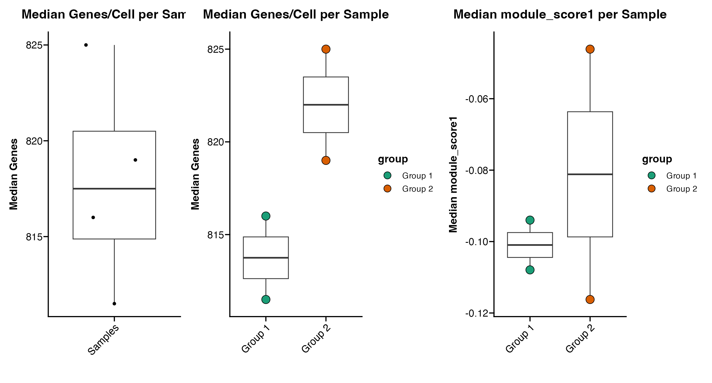

Statistics Functions
scCustomize contains a couple simple helper functions to return metrics of interest.
For this vignette I will be utilizing pbmc3k dataset from the SeuratData package.
# Load Packages
library(tidyverse)
library(Seurat)
library(scCustomize)
library(qs)
# Load example dataset for tutorial
pbmc <- pbmc3k.SeuratData::pbmc3k.finalNow let’s add some extra meta data for use with tutorial
# Add mito and ribo data
pbmc <- Add_Mito_Ribo_Seurat(seurat_object = pbmc, species = "human")
# Add random sample and group variables
pbmc$orig.ident <- sample(c("sample1", "sample2", "sample3", "sample4"), size = ncol(pbmc), replace = TRUE)
pbmc@meta.data$group[pbmc@meta.data$orig.ident == "sample1" | pbmc@meta.data$orig.ident == "sample3"] <- "Group 1"
pbmc@meta.data$group[pbmc@meta.data$orig.ident == "sample2" | pbmc@meta.data$orig.ident == "sample4"] <- "Group 2"
# Add dummy module score
pbmc <- AddModuleScore(object = pbmc, features = list(c("CD3E", "CD4", "THY1", "TCRA")), name = "module_score")Cells Per Identity
It can be really helpful to know the number and percentage of cells per identity/cluster during analysis.
scCustomize provides the Cluster_Stats_All_Samples function to make this easy.
cluster_stats <- Cluster_Stats_All_Samples(seurat_object = pbmc)
cluster_stats| Cluster | Number | Freq | sample1 | sample2 | sample3 | sample4 | sample1_% | sample2_% | sample3_% | sample4_% |
|---|---|---|---|---|---|---|---|---|---|---|
| Naive CD4 T | 697 | 26.4215315 | 183 | 177 | 185 | 152 | 26.0683761 | 26.940639 | 27.9034691 | 24.6753247 |
| Memory CD4 T | 483 | 18.3093252 | 119 | 117 | 115 | 132 | 16.9515670 | 17.808219 | 17.3453997 | 21.4285714 |
| CD14+ Mono | 480 | 18.1956027 | 117 | 121 | 123 | 119 | 16.6666667 | 18.417047 | 18.5520362 | 19.3181818 |
| B | 344 | 13.0401820 | 94 | 88 | 77 | 85 | 13.3903134 | 13.394216 | 11.6138763 | 13.7987013 |
| CD8 T | 271 | 10.2729340 | 79 | 72 | 75 | 45 | 11.2535613 | 10.958904 | 11.3122172 | 7.3051948 |
| FCGR3A+ Mono | 162 | 6.1410159 | 53 | 35 | 42 | 32 | 7.5498575 | 5.327245 | 6.3348416 | 5.1948052 |
| NK | 155 | 5.8756634 | 42 | 38 | 36 | 39 | 5.9829060 | 5.783866 | 5.4298643 | 6.3311688 |
| DC | 32 | 1.2130402 | 9 | 6 | 7 | 10 | 1.2820513 | 0.913242 | 1.0558069 | 1.6233766 |
| Platelet | 14 | 0.5307051 | 6 | 3 | 3 | 2 | 0.8547009 | 0.456621 | 0.4524887 | 0.3246753 |
| Total | 2638 | 100.0000000 | 702 | 657 | 663 | 616 | 100.0000000 | 100.000000 | 100.0000000 | 100.0000000 |
By default Cluster_Stats_All_Samples uses “orig.ident” as the group variable but user can specify any @meta.data slot variable.
cluster_stats <- Cluster_Stats_All_Samples(seurat_object = pbmc, group_by_var = "group")
cluster_stats| Cluster | Number | Freq | Group 1 | Group 2 | Group 1_% | Group 2_% |
|---|---|---|---|---|---|---|
| Naive CD4 T | 697 | 26.4215315 | 368 | 329 | 26.9597070 | 25.844462 |
| Memory CD4 T | 483 | 18.3093252 | 234 | 249 | 17.1428571 | 19.560094 |
| CD14+ Mono | 480 | 18.1956027 | 240 | 240 | 17.5824176 | 18.853103 |
| B | 344 | 13.0401820 | 171 | 173 | 12.5274725 | 13.589945 |
| CD8 T | 271 | 10.2729340 | 154 | 117 | 11.2820513 | 9.190888 |
| FCGR3A+ Mono | 162 | 6.1410159 | 95 | 67 | 6.9597070 | 5.263158 |
| NK | 155 | 5.8756634 | 78 | 77 | 5.7142857 | 6.048704 |
| DC | 32 | 1.2130402 | 16 | 16 | 1.1721612 | 1.256873 |
| Platelet | 14 | 0.5307051 | 9 | 5 | 0.6593407 | 0.392773 |
| Total | 2638 | 100.0000000 | 1365 | 1273 | 100.0000000 | 100.000000 |
Percent of Cells Expressing Feature(s)
It can also be informative to understand the percent of cells/nuclei that express a given feature or set of features.
scCustomize provides the Percent_Expressing function to return these results.
percent_express <- Percent_Expressing(seurat_object = pbmc, features = c("CD4", "CD8A"))| Naive.CD4.T | Memory.CD4.T | CD14..Mono | B | CD8.T | FCGR3A..Mono | NK | DC | Platelet | |
|---|---|---|---|---|---|---|---|---|---|
| CD4 | 6.743185 | 15.942029 | 24.375 | 1.453488 | 2.583026 | 27.160494 | 0.6451613 | 34.375 | 0 |
| CD8A | 13.342898 | 8.902691 | 1.875 | 2.616279 | 50.553505 | 3.703704 | 8.3870968 | 3.125 | 0 |
Change grouping variable
By default the function groups expression across @active.ident (see above) but user can specify difference variable if desired.
percent_express <- Percent_Expressing(seurat_object = pbmc, features = c("CD4", "CD8A"), group_by = "orig.ident")| sample3 | sample4 | sample1 | sample2 | |
|---|---|---|---|---|
| CD4 | 11.61388 | 10.87662 | 11.96581 | 12.32877 |
| CD8A | 12.51885 | 11.20130 | 11.53846 | 11.87215 |
Split within groups
User can also supply a split_by variable to quantify expression within group split by meta data variable
percent_express <- Percent_Expressing(seurat_object = pbmc, features = c("CD4", "CD8A"), split_by = "group")| Naive.CD4.T_Group.1 | Naive.CD4.T_Group.2 | Memory.CD4.T_Group.1 | Memory.CD4.T_Group.2 | CD14..Mono_Group.1 | CD14..Mono_Group.2 | B_Group.2 | B_Group.1 | CD8.T_Group.1 | CD8.T_Group.2 | FCGR3A..Mono_Group.2 | FCGR3A..Mono_Group.1 | NK_Group.2 | NK_Group.1 | DC_Group.1 | DC_Group.2 | Platelet_Group.1 | Platelet_Group.2 | |
|---|---|---|---|---|---|---|---|---|---|---|---|---|---|---|---|---|---|---|
| CD4 | 7.608696 | 5.775076 | 14.95726 | 16.867470 | 25.0000000 | 23.750000 | 1.734104 | 1.169591 | 3.246753 | 1.709402 | 26.865672 | 27.368421 | 0.00000 | 1.282051 | 25.00 | 43.75 | 0 | 0 |
| CD8A | 14.130435 | 12.462006 | 10.25641 | 7.630522 | 0.8333333 | 2.916667 | 2.890173 | 2.339181 | 48.051948 | 53.846154 | 4.477612 | 3.157895 | 11.68831 | 5.128205 | 6.25 | 0.00 | 0 | 0 |
Set threshold of expression
Users can also supply a threshold value to quantify percent of cells expressing feature(s) above a certain threshold (be sure to note which slot is being used to quantify expression when setting thresholds).
NOTE: Percent_Expressing currently only supports single threshold across all features
percent_express <- Percent_Expressing(seurat_object = pbmc, features = c("CD4", "CD8A"), threshold = 2)| Naive.CD4.T | Memory.CD4.T | CD14..Mono | B | CD8.T | FCGR3A..Mono | NK | DC | Platelet | |
|---|---|---|---|---|---|---|---|---|---|
| CD4 | 1.147776 | 0.621118 | 5.8333333 | 0.5813953 | 0.3690037 | 1.851852 | 0.000000 | 3.125 | 0 |
| CD8A | 6.456241 | 2.070393 | 0.2083333 | 0.8720930 | 24.7232472 | 0.000000 | 3.225807 | 0.000 | 0 |
Calculate Summary Median Values
scCustomize contains function Median_Stats to quickly calculate the medians for basic QC stats (Genes/, UMIs/, % Mito/Cell).
Basic Use
By default Median_Stats will calculate medians for the following meta data columns (if present): “nCount_RNA”, “nFeature_RNA”, “percent_mito”, “percent_ribo”, “percent_mito_ribo”.
median_stats <- Median_Stats(seurat_object = pbmc, group_by_var = "orig.ident")| orig.ident | Median_nCount_RNA | Median_nFeature_RNA | Median_percent_mito | Median_percent_ribo | Median_percent_mito_ribo |
|---|---|---|---|---|---|
| sample1 | 2217.5 | 822 | 1.975143 | 36.62992 | 38.75757 |
| sample2 | 2189.0 | 816 | 2.011096 | 37.27927 | 39.57173 |
| sample3 | 2191.0 | 815 | 2.053140 | 36.63433 | 38.96817 |
| sample4 | 2257.0 | 825 | 2.021780 | 36.92302 | 38.96528 |
| Totals (All Cells) | 2213.0 | 819 | 2.010702 | 36.92524 | 39.03276 |
Additional Variables
In addition to default variables, users can supply their own additional meta data columns to calculate medians using the median_var parameter.
NOTE: The meta data column must be in numeric format (e.g., integer, numeric, dbl)
median_stats <- Median_Stats(seurat_object = pbmc, group_by_var = "orig.ident", median_var = "module_score1")| orig.ident | Median_nCount_RNA | Median_nFeature_RNA | Median_percent_mito | Median_percent_ribo | Median_percent_mito_ribo | Median_module_score1 |
|---|---|---|---|---|---|---|
| sample1 | 2217.5 | 822 | 1.975143 | 36.62992 | 38.75757 | -0.0940842 |
| sample2 | 2189.0 | 816 | 2.011096 | 37.27927 | 39.57173 | -0.0675634 |
| sample3 | 2191.0 | 815 | 2.053140 | 36.63433 | 38.96817 | -0.1569790 |
| sample4 | 2257.0 | 825 | 2.021780 | 36.92302 | 38.96528 | -0.0701089 |
| Totals (All Cells) | 2213.0 | 819 | 2.010702 | 36.92524 | 39.03276 | -0.0922378 |
Plotting Median Data
scCustomize also contains series of functions for plotting the results of these median calculations:
Plot_Median_GenesPlot_Median_UMIsPlot_Median_MitoPlot_Median_Other
Plot_Median_Genes(seurat_object = pbmc)
Plot_Median_Genes(seurat_object = pbmc, group_by = "group")
Plot_Median_Other(seurat_object = pbmc, median_var = "module_score1", group_by = "group")